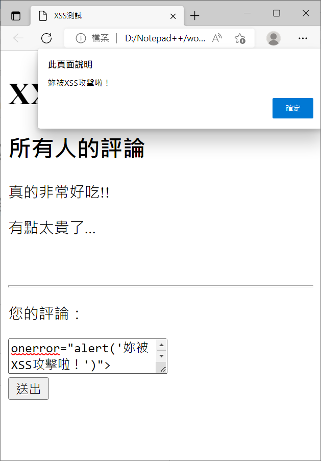

Cross Site Scripting
〈網路應用程式的各種危機〉第一回
隨著網際網路從Web 1.0進化到Web 2.0，我們從只能夠單純的瀏覽網頁進步到能夠以互動的方式來使用網路資源，像是使用線上的計算機，或是登入google帳號然後使用google公司提供的各種服務，這都是Web 2.0所帶來的好處。但是中國有句俗語說：「禍兮福之所依，福兮禍之所伏」，多了互動功能的網頁潛藏著各種危機。OWASP (Open Web Application Security Project)開放網路軟體安全計畫是個非營利的公益組織，致力於協助各個組織改善網路應用程式的安全性，並且提出了 OWASP Top 10，就是網路應用程式的前10大弱點。藉由了解這些潛在的問題，我們在使用這些方便的網路資源時就會多了一些警覺心，而開發網路應用程式的工作者們也會更清楚有什麼地方是需要加強的。
OWASP Top 10每年都會有所更動，也就代表著攻擊者們每年總是絞盡腦汁，發展出新的攻擊手法。然而那些比較早期所發展出的攻擊方法仍然存在，因此我們仍然需要了解，才能夠避免被那些「老把戲」給騙，讓網路攻擊也開始走起「復古風潮」。今天想要來介紹的叫做Cross Site Scripting (XSS)。
Cross Site Scripting (XSS)
這個通常發生在網頁有提供使用者輸入的地方，並且會把使用者輸入的東西顯示在網頁上。舉例來說有一家餐廳的網站可以讓顧客們留下評論，並且在收到顧客評論後把它顯示在評論區之類的地方。這個時候，假如沒有對顧客們輸入的東西做篩選或是過濾，那麼就很可能出現問題了。
讓我們來看一個簡單的例子，有個網站它的html內容如如下：
<!doctype html>
<html lang="zh-tw">
<head>
<title>XSS測試</title>
<meta charset="utf-8">
</head>
<body>
<h1>XX餐廳評論區</h1>
<section>
<div id="comment">
<h1>所有人的評論</h1>
<!--利用appendChild增加評論-->
</div>
</section>
<section>
<div>
<hr>
<p>您的評論：</p>
<textarea id="your_comment">
</textarea><br>
<button type="button" onclick="submit()">送出</button>
</p>
</div>
</section>
<script>
function submit() {
//讀取輸入的評論
var comment=document.getElementById("your_comment").value;
//取得評論區的div元素，然後把自己的comment增加到裡面
var div=document.getElementById("comment");
var p=document.createElement("p");
p.innerHTML=comment;
div.appendChild(p);
}
</script>
</body>
</html>
以上的html檔執行之後(用瀏覽器開啟即可)會看到這個畫面：
當我們在「您的評論」寫下訊息並按下送出之後，會在「所有人的評論」區顯示剛剛輸入的內容。像是下面這張圖：
那麼，當我們故意輸入這段文字：<img src="故意輸入錯誤的url，然後觸發onerror事件" onerror="alert('妳被XSS攻擊啦！')">。讓我們來看看會發生什麼事情：

出現不得了的東西了！可以看到視窗跳出了一個通知，表示說我們可以自己用javascript寫一段程式然後丟給網頁，讓網頁幫我們執行(＃°Д°) 雖然目前只是跳出一個警告視窗，但其實javascript的功能可說是非常強大，假如被執行的程式是能夠把網站的其他用戶的銀行卡號等等機密資料傳給攻擊者呢？又或是把原本的網頁結構給破壞，讓其他人無法使用呢？這就是XSS可怕的地方…
該怎麼辦呢？
可以發先關鍵的部分在於我們輸入<…>之後，這個東西會被當成html中的元素來處理，因此只要把「<」以及「>」用特殊符號的表示方式來呈現就可以避免被XSS攻擊囉！
讓我們在之間加入下面的程式：
function changeSymbol(str) {
return str.replace(/</g,'<').replace(/>/g,'>');
}
然後把前面的p.innerHTML=comment改成
p.innerHTML=changeSymbol(comment);再次在「您的評論」中輸入一樣的字串<img src="故意輸入錯誤的url，然後觸發onerror事件" onerror="alert('妳被XSS攻擊啦！')">。讓我們來看看結果：
這次輸入的東西就直接呈現在所有人的評論中了，沒有被當成html中的元素來處理了！透過簡單的把一些敏感的符號換成一般單純的符號，就能夠避免XSS的危機啦(｡･∀･)ﾉﾞ
附上修改過後的網頁html內容完整版：
<!doctype html>
<html lang="zh-tw">
<head>
<title>XSS測試</title>
<meta charset="utf-8">
</head>
<body>
<h1>XX餐廳評論區</h1>
<section>
<div id="comment">
<h1>所有人的評論</h1>
<!--利用appendChild增加評論-->
</div>
</section>
<section>
<div>
<hr>
<p>您的評論：</p>
<textarea id="your_comment">
</textarea><br>
<button type="button" onclick="submit()">送出</button>
</p>
</div>
</section>
<script>
function submit() {
//讀取輸入的評論
var comment=document.getElementById("your_comment").value;
//alert(comment);
//取得評論區的div元素，然後把自己的comment增加到裡面
var div=document.getElementById("comment");
var p=document.createElement("p");
//記得把comment使用changeSymbol函數轉換，變成單純的字串
p.innerHTML=changeSymbol(comment);
div.appendChild(p);
}
//增加的部分，用來將<以<表示，將>以>表示，來避免輸入的內容被當成html中的標籤來處理
function changeSymbol(str) {
return str.replace(/</g,'<').replace(/>/g,'>');
}
</script>
</body>
</html>小結
Cross Site Scripting (XSS)是個攻擊者利用網頁對於使用者輸入的疏忽，讓網頁執行攻擊者輸入的惡意程式碼的危機。XSS其實可以再細分為儲存型(Stored XSS)與反射型(Reflected XSS)。儲存型表示攻擊者的惡意程式碼被網頁存到伺服器的資料庫中，當其他使用者瀏覽同一個網頁時，那段惡意程式碼就會被再次的拿出來然後在其他使用者的電腦上執行；而反射型表示這段惡意程式碼是被加在網站的url中(例如表單使用get方式來傳送參數到其他網頁的話，就可以在該參數的內容值加上惡意的script程式碼)，而收到這些參數的網頁沒有經過處理就直接把參數內容拿來使用時，就會讓其他使用者點選這個被改造的url之後受害。但其實只要多注意，對使用者的輸入做一些簡單的處理就可以避免XSS囉～

國立交通大學材料系奈米科技碩士班畢業(現在應該稱國立陽明交通大學ʕ •ᴥ•ʔ)。雖然非資工相關科系畢業，但本著對資工領域的興趣而開始自學相關知識，目前則專攻網頁相關知識，如HTML5、CSS3、JavaScript、Node.js。以跨領域學習者的角度來介紹資工領域相關的知識，除了加深自己對相關知識的理解，也期望同是跨領域學習的朋友們因為瀏覽我的文章而有更多不一樣的觀點可以參考。